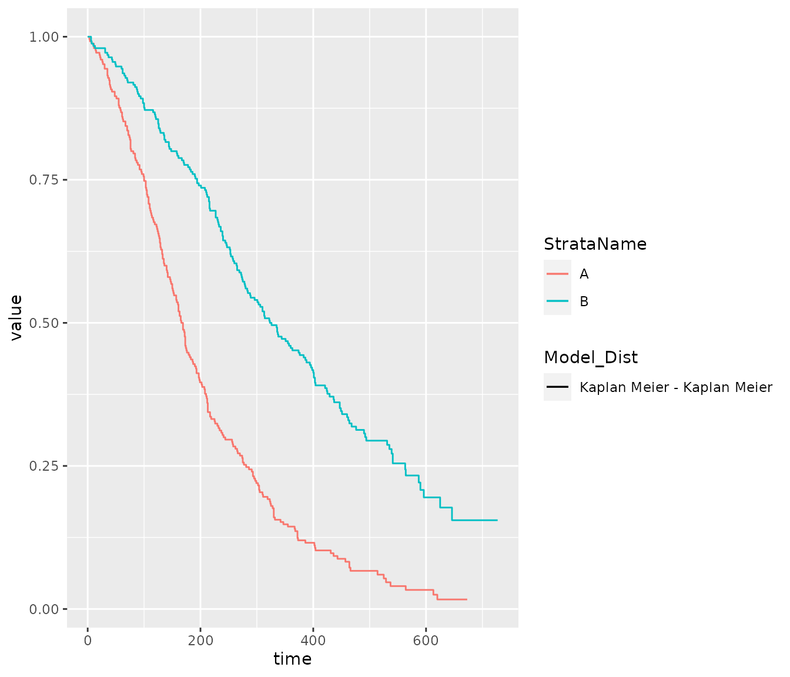

Fitting_models_in_R.RmdParametric survival models are often the preferred method of extrapolating survival data for use in economic models. The National Institute for Health and Care Excellence (NICE) Decision Support Unit (DSU) technical support document (TSD) 14 recommends that the Exponential, Weibull, Gompertz, log-logistic, log normal and Generalized Gamma parametric models should all be considered.[1] More recently, NICE also discusses more flexible models in NICE DSU TSD 21, however, more these models are not in the scope of this package.[2] The Canadian Agency for Drugs and Technologies in Health (CADTH) additionally specifies that the Gamma distribution must also be considered. This document therefore details the characteristics of each of these distributions and demonstrates how the parameters from each distribution, outputted using the flexsurvPlus package, can be implemented within an economic model.[3] The Generalized F distribution is not commonly used, however it has been included in this package in case it is required.
The flexsurvPlus package allows the inclusion of a treatment effect in the following four ways:
Separate models - Models fitted to each treatment arm separately
Independent shape models - Models fitted to both/all treatment arms including a treatment covariate to model the effect of treatment on both the scale and shape parameter(s) of the distribution
Common shape models - Models fitted to both/all treatment arms including a treatment covariate to model the effect of treatment on the scale parameter of the distribution. The shape parameter(s) of the distribution is common across treatments which reflects an assumption of proportional hazards or accelerated failure time between treatments depending on the distribution
One arm models - Models fitted to the entire dataset (no treatment strata)
This document details how to use the flexsurvPlus package to perform these models. A separate vignette; “Parametric survival analysis using the flexsurvPlus package: understanding the theory” details the theory behind the models.
To perform survival analyses, patient level data is required for the survival endpoints.
This example uses a standard simulated data set (adtte). There is no standard naming that is needed for this package however, there are some set variables that are needed:
The data must be in “wide” format such that there is one row per patient and columns for each endpoint separately. In this example, we analyze progression-free survival (PFS).
adtte <- sim_adtte(seed = 2020, rho = 0.6) head(adtte) #> USUBJID ARMCD ARM PARAMCD PARAM AVAL AVALU #> 1 1 A Reference Arm A PFS Progression Free Survival 141 DAYS #> 2 2 A Reference Arm A PFS Progression Free Survival 173 DAYS #> 3 3 A Reference Arm A PFS Progression Free Survival 197 DAYS #> 4 4 A Reference Arm A PFS Progression Free Survival 133 DAYS #> 5 5 A Reference Arm A PFS Progression Free Survival 100 DAYS #> 6 6 A Reference Arm A PFS Progression Free Survival 525 DAYS #> CNSR #> 1 0 #> 2 0 #> 3 0 #> 4 0 #> 5 0 #> 6 0 # subset PFS data and rename PFS_data <- adtte %>% filter(PARAMCD=="PFS") %>% transmute(USUBJID, ARMCD, PFS_days = AVAL, PFS_event = 1- CNSR ) head(PFS_data) #> USUBJID ARMCD PFS_days PFS_event #> 1 1 A 141 1 #> 2 2 A 173 1 #> 3 3 A 197 1 #> 4 4 A 133 1 #> 5 5 A 100 1 #> 6 6 A 525 1
Before performing any statistical analysis, it is important to explore the data. Most importantly is a Kaplan-Meier plot. A simple Kaplan-Meier plot has been produced here:
# Create survfit object km.est.PFS <- survfit(Surv(PFS_days, PFS_event) ~ ARMCD, data = PFS_data, conf.type = 'plain') # Plot Kaplan-Meier plot(km.est.PFS, col = c(blue, pink), # plot colours lty = c(1:2), # line type xlab = "Time (Days)", # x-axis label ylab = "Progression-free survival", # y-axis label xlim = c(0, 800)) legend(x = 500, y = .9, legend = c("Arm A", "Arm B"), lty = c(1:2), col = c(blue, pink))
The runPSM function fits parametric survival models for multiple distributions using the flexsurv package, manipulates the flexsurv objects to get the parameter estimates and AIC and BIC value (using the flexsurvPlus function get_params) and rearranges the parameter estimates such that they can easily be output to excel to calculate survival for both the intervention and reference treatment in an economic model.
These functions can be used to estimate 3 types of model:
The inputs to the runPSM function are:
data - A data frame containing individual patient data for the relevant time to event outcomes
time_var - Name of time variable in ‘data.’ Variable must be numerical and >0.
event_var - Name of event variable in ‘data.’ Variable must be numerical and contain 1’s to indicate an event and 0 to indicate a censor.
model.type - Character vector indicating the types of model formula provided. Permitted values are ‘Common shape,’ ‘Independent shape’ or ‘Separate’ as per the models explained above.
distr - Each type of model can be fitted with multiple distributions. The distributions available for this package are:
Exponential (‘exp’)
Weibull (‘weibull’)
Gompertz (‘gompertz’)
Log-normal (‘lnorm’)
Log-logistic (‘llogis’)
Generalized gamma (‘gengamma’)
Gamma (‘gamma’)
Generalized F (‘genf’)
strata_var - Name of stratification variable in “data.” This is usually the treatment variable and must be categorical. Not required when model.type=‘One arm.’
int_name - Character to indicate the name of the treatment of interest, must be a level of the “strata_var” column in “data,” used for labelling the parameters.
ref_name - Character to indicate the name of the reference treatment, must be a level of the “strata_var” column in “data,” used for labelling the parameters. Not required when model.type=‘One arm.’
More information about each function can be used by running the code ?runPSM.
Example code to fit all two arm models is presented below.
psm_PFS_all <- runPSM(data=PFS_data, time_var="PFS_days", event_var="PFS_event", model.type= c("Common shape", "Independent shape", "Separate"), distr = c('exp', 'weibull', 'gompertz', 'lnorm', 'llogis', 'gengamma', 'gamma', 'genf'), strata_var = "ARMCD", int_name="A", ref_name = "B") psm_PFS_all #> $models #> $models$comshp.exp #> Call: #> flexsurv::flexsurvreg(formula = model.formula, data = data, dist = dist) #> #> Estimates: #> data mean est L95% U95% se exp(est) L95% #> rate NA 0.002210 0.001911 0.002557 0.000164 NA NA #> ARMInt 0.500000 0.767591 0.574293 0.960889 0.098623 2.154570 1.775875 #> U95% #> rate NA #> ARMInt 2.614019 #> #> N = 500, Events: 419, Censored: 81 #> Total time at risk: 131862 #> Log-likelihood = -2798.33, df = 2 #> AIC = 5600.66 #> #> #> $models$comshp.weibull #> Call: #> flexsurv::flexsurvreg(formula = model.formula, data = data, dist = dist) #> #> Estimates: #> data mean est L95% U95% se exp(est) L95% #> shape NA 1.3881 1.2830 1.5017 0.0557 NA NA #> scale NA 437.0600 393.4819 485.4643 23.4223 NA NA #> ARMInt 0.5000 -0.6623 -0.8035 -0.5211 0.0721 0.5157 0.4477 #> U95% #> shape NA #> scale NA #> ARMInt 0.5939 #> #> N = 500, Events: 419, Censored: 81 #> Total time at risk: 131862 #> Log-likelihood = -2769.611, df = 3 #> AIC = 5545.222 #> #> #> $models$comshp.gompertz #> Call: #> flexsurv::flexsurvreg(formula = model.formula, data = data, dist = dist) #> #> Estimates: #> data mean est L95% U95% se exp(est) L95% #> shape NA 0.002072 0.001455 0.002688 0.000315 NA NA #> rate NA 0.001358 0.001091 0.001690 0.000152 NA NA #> ARMInt 0.500000 0.911755 0.712472 1.111039 0.101677 2.488687 2.039025 #> U95% #> shape NA #> rate NA #> ARMInt 3.037512 #> #> N = 500, Events: 419, Censored: 81 #> Total time at risk: 131862 #> Log-likelihood = -2779.001, df = 3 #> AIC = 5564.003 #> #> #> $models$comshp.lnorm #> Call: #> flexsurv::flexsurvreg(formula = model.formula, data = data, dist = dist) #> #> Estimates: #> data mean est L95% U95% se exp(est) L95% #> meanlog NA 5.7350 5.6068 5.8632 0.0654 NA NA #> sdlog NA 0.9863 0.9199 1.0575 0.0351 NA NA #> ARMInt 0.5000 -0.7128 -0.8901 -0.5355 0.0905 0.4903 0.4106 #> U95% #> meanlog NA #> sdlog NA #> ARMInt 0.5854 #> #> N = 500, Events: 419, Censored: 81 #> Total time at risk: 131862 #> Log-likelihood = -2800.225, df = 3 #> AIC = 5606.451 #> #> #> $models$comshp.llogis #> Call: #> flexsurv::flexsurvreg(formula = model.formula, data = data, dist = dist) #> #> Estimates: #> data mean est L95% U95% se exp(est) L95% #> shape NA 1.9062 1.7573 2.0676 0.0791 NA NA #> scale NA 323.1928 288.2447 362.3782 18.8707 NA NA #> ARMInt 0.5000 -0.6975 -0.8565 -0.5384 0.0812 0.4978 0.4246 #> U95% #> shape NA #> scale NA #> ARMInt 0.5837 #> #> N = 500, Events: 419, Censored: 81 #> Total time at risk: 131862 #> Log-likelihood = -2780.256, df = 3 #> AIC = 5566.512 #> #> #> $models$comshp.gengamma #> Call: #> flexsurv::flexsurvreg(formula = model.formula, data = data, dist = dist) #> #> Estimates: #> data mean est L95% U95% se exp(est) L95% #> mu NA 6.0574 5.9291 6.1857 0.0654 NA NA #> sigma NA 0.7377 0.6624 0.8215 0.0405 NA NA #> Q NA 0.9195 0.6682 1.1708 0.1282 NA NA #> ARMInt 0.5000 -0.6699 -0.8149 -0.5249 0.0740 0.5118 0.4427 #> U95% #> mu NA #> sigma NA #> Q NA #> ARMInt 0.5916 #> #> N = 500, Events: 419, Censored: 81 #> Total time at risk: 131862 #> Log-likelihood = -2769.421, df = 4 #> AIC = 5546.841 #> #> #> $models$comshp.gamma #> Call: #> flexsurv::flexsurvreg(formula = model.formula, data = data, dist = dist) #> #> Estimates: #> data mean est L95% U95% se exp(est) L95% #> shape NA 1.658113 1.465091 1.876566 0.104702 NA NA #> rate NA 0.004046 0.003377 0.004846 0.000373 NA NA #> ARMInt 0.500000 0.684825 0.537124 0.832527 0.075359 1.983426 1.711078 #> U95% #> shape NA #> rate NA #> ARMInt 2.299122 #> #> N = 500, Events: 419, Censored: 81 #> Total time at risk: 131862 #> Log-likelihood = -2770.102, df = 3 #> AIC = 5546.203 #> #> #> $models$comshp.genf #> Call: #> flexsurv::flexsurvreg(formula = model.formula, data = data, dist = dist) #> #> Estimates: #> data mean est L95% U95% se exp(est) L95% #> mu NA 6.0061 5.8600 6.1523 0.0746 NA NA #> sigma NA 0.6487 0.5128 0.8206 0.0778 NA NA #> Q NA 0.7342 0.3803 1.0881 0.1806 NA NA #> P NA 0.9507 0.1978 4.5692 0.7615 NA NA #> ARMInt 0.5000 -0.6866 -0.8313 -0.5420 0.0738 0.5033 0.4355 #> U95% #> mu NA #> sigma NA #> Q NA #> P NA #> ARMInt 0.5816 #> #> N = 500, Events: 419, Censored: 81 #> Total time at risk: 131862 #> Log-likelihood = -2768.32, df = 5 #> AIC = 5546.64 #> #> #> $models$sep.exp.int #> Call: #> flexsurv::flexsurvreg(formula = model.formula, data = data, dist = dist) #> #> Estimates: #> est L95% U95% se #> rate 0.004762 0.004194 0.005408 0.000309 #> #> N = 250, Events: 238, Censored: 12 #> Total time at risk: 49975 #> Log-likelihood = -1510.588, df = 1 #> AIC = 3023.176 #> #> #> $models$sep.weibull.int #> Call: #> flexsurv::flexsurvreg(formula = model.formula, data = data, dist = dist) #> #> Estimates: #> est L95% U95% se #> shape 1.3841 1.2516 1.5306 0.0711 #> scale 225.2128 204.7892 247.6732 10.9235 #> #> N = 250, Events: 238, Censored: 12 #> Total time at risk: 49975 #> Log-likelihood = -1493.471, df = 2 #> AIC = 2990.943 #> #> #> $models$sep.gompertz.int #> Call: #> flexsurv::flexsurvreg(formula = model.formula, data = data, dist = dist) #> #> Estimates: #> est L95% U95% se #> shape 0.002126 0.001252 0.003000 0.000446 #> rate 0.003345 0.002719 0.004116 0.000354 #> #> N = 250, Events: 238, Censored: 12 #> Total time at risk: 49975 #> Log-likelihood = -1500.61, df = 2 #> AIC = 3005.22 #> #> #> $models$sep.lnorm.int #> Call: #> flexsurv::flexsurvreg(formula = model.formula, data = data, dist = dist) #> #> Estimates: #> est L95% U95% se #> meanlog 5.0201 4.9049 5.1352 0.0587 #> sdlog 0.9245 0.8442 1.0124 0.0428 #> #> N = 250, Events: 238, Censored: 12 #> Total time at risk: 49975 #> Log-likelihood = -1508.722, df = 2 #> AIC = 3021.443 #> #> #> $models$sep.llogis.int #> Call: #> flexsurv::flexsurvreg(formula = model.formula, data = data, dist = dist) #> #> Estimates: #> est L95% U95% se #> shape 2.02 1.81 2.24 0.11 #> scale 161.22 145.05 179.19 8.69 #> #> N = 250, Events: 238, Censored: 12 #> Total time at risk: 49975 #> Log-likelihood = -1499.366, df = 2 #> AIC = 3002.733 #> #> #> $models$sep.gengamma.int #> Call: #> flexsurv::flexsurvreg(formula = model.formula, data = data, dist = dist) #> #> Estimates: #> est L95% U95% se #> mu 5.3572 5.2058 5.5086 0.0772 #> sigma 0.7496 0.6635 0.8469 0.0467 #> Q 0.8349 0.5197 1.1501 0.1608 #> #> N = 250, Events: 238, Censored: 12 #> Total time at risk: 49975 #> Log-likelihood = -1492.975, df = 3 #> AIC = 2991.95 #> #> #> $models$sep.gamma.int #> Call: #> flexsurv::flexsurvreg(formula = model.formula, data = data, dist = dist) #> #> Estimates: #> est L95% U95% se #> shape 1.708525 1.447974 2.015960 0.144238 #> rate 0.008273 0.006806 0.010057 0.000824 #> #> N = 250, Events: 238, Censored: 12 #> Total time at risk: 49975 #> Log-likelihood = -1493.076, df = 2 #> AIC = 2990.152 #> #> #> $models$sep.genf.int #> Call: #> flexsurv::flexsurvreg(formula = model.formula, data = data, dist = dist) #> #> Estimates: #> est L95% U95% se #> mu 5.3121 5.1465 5.4777 0.0845 #> sigma 0.6579 0.4870 0.8888 0.1010 #> Q 0.7012 0.3001 1.1022 0.2046 #> P 0.8038 0.0983 6.5742 0.8619 #> #> N = 250, Events: 238, Censored: 12 #> Total time at risk: 49975 #> Log-likelihood = -1492.383, df = 4 #> AIC = 2992.766 #> #> #> $models$sep.exp.ref #> Call: #> flexsurv::flexsurvreg(formula = model.formula, data = data, dist = dist) #> #> Estimates: #> est L95% U95% se #> rate 0.002210 0.001911 0.002557 0.000164 #> #> N = 250, Events: 181, Censored: 69 #> Total time at risk: 81887 #> Log-likelihood = -1287.742, df = 1 #> AIC = 2577.485 #> #> #> $models$sep.weibull.ref #> Call: #> flexsurv::flexsurvreg(formula = model.formula, data = data, dist = dist) #> #> Estimates: #> est L95% U95% se #> shape 1.3944 1.2290 1.5821 0.0898 #> scale 436.9567 393.5292 485.1766 23.3372 #> #> N = 250, Events: 181, Censored: 69 #> Total time at risk: 81887 #> Log-likelihood = -1276.135, df = 2 #> AIC = 2556.271 #> #> #> $models$sep.gompertz.ref #> Call: #> flexsurv::flexsurvreg(formula = model.formula, data = data, dist = dist) #> #> Estimates: #> est L95% U95% se #> shape 0.002018 0.001149 0.002887 0.000443 #> rate 0.001377 0.001050 0.001807 0.000191 #> #> N = 250, Events: 181, Censored: 69 #> Total time at risk: 81887 #> Log-likelihood = -1278.377, df = 2 #> AIC = 2560.755 #> #> #> $models$sep.lnorm.ref #> Call: #> flexsurv::flexsurvreg(formula = model.formula, data = data, dist = dist) #> #> Estimates: #> est L95% U95% se #> meanlog 5.7541 5.6135 5.8946 0.0717 #> sdlog 1.0684 0.9587 1.1907 0.0591 #> #> N = 250, Events: 181, Censored: 69 #> Total time at risk: 81887 #> Log-likelihood = -1289.469, df = 2 #> AIC = 2582.939 #> #> #> $models$sep.llogis.ref #> Call: #> flexsurv::flexsurvreg(formula = model.formula, data = data, dist = dist) #> #> Estimates: #> est L95% U95% se #> shape 1.775 1.566 2.012 0.113 #> scale 324.711 287.502 366.736 20.163 #> #> N = 250, Events: 181, Censored: 69 #> Total time at risk: 81887 #> Log-likelihood = -1279.735, df = 2 #> AIC = 2563.469 #> #> #> $models$sep.gengamma.ref #> Call: #> flexsurv::flexsurvreg(formula = model.formula, data = data, dist = dist) #> #> Estimates: #> est L95% U95% se #> mu 6.1015 5.9352 6.2679 0.0849 #> sigma 0.6938 0.5462 0.8814 0.0847 #> Q 1.0810 0.5839 1.5782 0.2537 #> #> N = 250, Events: 181, Censored: 69 #> Total time at risk: 81887 #> Log-likelihood = -1276.081, df = 3 #> AIC = 2558.162 #> #> #> $models$sep.gamma.ref #> Call: #> flexsurv::flexsurvreg(formula = model.formula, data = data, dist = dist) #> #> Estimates: #> est L95% U95% se #> shape 1.596692 1.325325 1.923622 0.151750 #> rate 0.003872 0.003033 0.004943 0.000482 #> #> N = 250, Events: 181, Censored: 69 #> Total time at risk: 81887 #> Log-likelihood = -1276.884, df = 2 #> AIC = 2557.768 #> #> #> $models$sep.genf.ref #> Call: #> flexsurv::flexsurvreg(formula = model.formula, data = data, dist = dist) #> #> Estimates: #> est L95% U95% se #> mu 5.965 5.654 6.275 0.158 #> sigma 0.611 0.379 0.985 0.149 #> Q 0.601 -0.364 1.566 0.492 #> P 1.767 0.136 22.976 2.313 #> #> N = 250, Events: 181, Censored: 69 #> Total time at risk: 81887 #> Log-likelihood = -1275.713, df = 4 #> AIC = 2559.427 #> #> #> $models$indshp.exp #> Call: #> flexsurv::flexsurvreg(formula = model.formula, data = data, dist = dist) #> #> Estimates: #> data mean est L95% U95% se exp(est) L95% #> rate NA 0.002210 0.001911 0.002557 0.000164 NA NA #> ARMInt 0.500000 0.767591 0.574293 0.960889 0.098623 2.154570 1.775875 #> U95% #> rate NA #> ARMInt 2.614019 #> #> N = 500, Events: 419, Censored: 81 #> Total time at risk: 131862 #> Log-likelihood = -2798.33, df = 2 #> AIC = 5600.66 #> #> #> $models$indshp.weibull #> Call: #> flexsurv::flexsurvreg(formula = model.formula, data = data, dist = dist) #> #> Estimates: #> data mean est L95% U95% se exp(est) #> shape NA 1.39439 1.22897 1.58208 0.08984 NA #> scale NA 436.95667 393.52916 485.17658 23.33723 NA #> ARMInt 0.50000 -0.66279 -0.80419 -0.52138 0.07215 0.51541 #> shape(ARMInt) 0.50000 -0.00742 -0.16889 0.15406 0.08239 0.99261 #> L95% U95% #> shape NA NA #> scale NA NA #> ARMInt 0.44745 0.59370 #> shape(ARMInt) 0.84460 1.16656 #> #> N = 500, Events: 419, Censored: 81 #> Total time at risk: 131862 #> Log-likelihood = -2769.607, df = 4 #> AIC = 5547.214 #> #> #> $models$indshp.gompertz #> Call: #> flexsurv::flexsurvreg(formula = model.formula, data = data, dist = dist) #> #> Estimates: #> data mean est L95% U95% se exp(est) #> shape NA 0.002018 0.001194 0.002841 0.000420 NA #> rate NA 0.001377 0.001050 0.001807 0.000191 NA #> ARMInt 0.500000 0.887593 0.545992 1.229194 0.174289 2.429276 #> shape(ARMInt) 0.500000 0.000108 -0.001115 0.001332 0.000624 1.000108 #> L95% U95% #> shape NA NA #> rate NA NA #> ARMInt 1.726320 3.418474 #> shape(ARMInt) 0.998886 1.001332 #> #> N = 500, Events: 419, Censored: 81 #> Total time at risk: 131862 #> Log-likelihood = -2778.987, df = 4 #> AIC = 5565.974 #> #> #> $models$indshp.llogis #> Call: #> flexsurv::flexsurvreg(formula = model.formula, data = data, dist = dist) #> #> Estimates: #> data mean est L95% U95% se exp(est) #> shape NA 1.7752 1.5662 2.0121 0.1134 NA #> scale NA 324.7128 287.5038 366.7375 20.1633 NA #> ARMInt 0.5000 -0.7002 -0.8614 -0.5390 0.0822 0.4965 #> shape(ARMInt) 0.5000 0.1272 -0.0375 0.2919 0.0840 1.1357 #> L95% U95% #> shape NA NA #> scale NA NA #> ARMInt 0.4226 0.5833 #> shape(ARMInt) 0.9632 1.3390 #> #> N = 500, Events: 419, Censored: 81 #> Total time at risk: 131862 #> Log-likelihood = -2779.101, df = 4 #> AIC = 5566.202 #> #> #> $models$indshp.gamma #> Call: #> flexsurv::flexsurvreg(formula = model.formula, data = data, dist = dist) #> #> Estimates: #> data mean est L95% U95% se exp(est) #> shape NA 1.596555 1.325203 1.923470 0.151743 NA #> rate NA 0.003871 0.003032 0.004942 0.000482 NA #> ARMInt 0.500000 0.759334 0.446665 1.072003 0.159528 2.136853 #> shape(ARMInt) 0.500000 0.067700 -0.181462 0.316863 0.127126 1.070045 #> L95% U95% #> shape NA NA #> rate NA NA #> ARMInt 1.563091 2.921226 #> shape(ARMInt) 0.834050 1.372814 #> #> N = 500, Events: 419, Censored: 81 #> Total time at risk: 131862 #> Log-likelihood = -2769.96, df = 4 #> AIC = 5547.919 #> #> #> $models$indshp.lnorm #> Call: #> flexsurv::flexsurvreg(formula = model.formula, data = data, dist = dist) #> #> Estimates: #> data mean est L95% U95% se exp(est) #> meanlog NA 5.75408 5.61352 5.89464 0.07172 NA #> sdlog NA 1.06842 0.95866 1.19074 0.05909 NA #> ARMInt 0.50000 -0.73401 -0.91570 -0.55232 0.09270 0.47998 #> sdlog(ARMInt) 0.50000 -0.14466 -0.28608 -0.00323 0.07216 0.86532 #> L95% U95% #> meanlog NA NA #> sdlog NA NA #> ARMInt 0.40024 0.57561 #> sdlog(ARMInt) 0.75120 0.99678 #> #> N = 500, Events: 419, Censored: 81 #> Total time at risk: 131862 #> Log-likelihood = -2798.191, df = 4 #> AIC = 5604.382 #> #> #> $models$indshp.gengamma #> Call: #> flexsurv::flexsurvreg(formula = model.formula, data = data, dist = dist) #> #> Estimates: #> data mean est L95% U95% se exp(est) L95% #> mu NA 6.1016 5.9352 6.2680 0.0849 NA NA #> sigma NA 0.6938 0.5461 0.8814 0.0847 NA NA #> Q NA 1.0814 0.5840 1.5788 0.2538 NA NA #> ARMInt 0.5000 -0.7444 -0.9693 -0.5194 0.1148 0.4750 0.3794 #> sigma(ARMInt) 0.5000 0.0773 -0.1913 0.3460 0.1371 1.0804 0.8258 #> Q(ARMInt) 0.5000 -0.2465 -0.8353 0.3423 0.3004 0.7816 0.4338 #> U95% #> mu NA #> sigma NA #> Q NA #> ARMInt 0.5949 #> sigma(ARMInt) 1.4134 #> Q(ARMInt) 1.4082 #> #> N = 500, Events: 419, Censored: 81 #> Total time at risk: 131862 #> Log-likelihood = -2769.056, df = 6 #> AIC = 5550.112 #> #> #> $models$indshp.genf #> Call: #> flexsurv::flexsurvreg(formula = model.formula, data = data, dist = dist) #> #> Estimates: #> data mean est L95% U95% se exp(est) L95% #> mu NA 5.9638 5.6539 6.2738 0.1582 NA NA #> sigma NA 0.6104 0.3781 0.9853 0.1491 NA NA #> Q NA 0.5991 -0.3641 1.5623 0.4914 NA NA #> P NA 1.7770 0.1382 22.8488 2.3156 NA NA #> ARMInt 0.5000 -0.6517 -1.0031 -0.3002 0.1793 0.5212 0.3667 #> sigma(ARMInt) 0.5000 0.0753 -0.4902 0.6409 0.2886 1.0782 0.6125 #> Q(ARMInt) 0.5000 0.1022 -0.9411 1.1456 0.5323 1.1076 0.3902 #> P(ARMInt) 0.5000 -0.7957 -4.1067 2.5153 1.6893 0.4513 0.0165 #> U95% #> mu NA #> sigma NA #> Q NA #> P NA #> ARMInt 0.7407 #> sigma(ARMInt) 1.8982 #> Q(ARMInt) 3.1443 #> P(ARMInt) 12.3708 #> #> N = 500, Events: 419, Censored: 81 #> Total time at risk: 131862 #> Log-likelihood = -2768.096, df = 8 #> AIC = 5552.193 #> #> #> #> $model_summary #> flexsurvfit Model ModelF #> 1 comshp.exp Common shape Common shape #> 2 comshp.weibull Common shape Common shape #> 3 comshp.gompertz Common shape Common shape #> 4 comshp.lnorm Common shape Common shape #> 5 comshp.llogis Common shape Common shape #> 6 comshp.gengamma Common shape Common shape #> 7 comshp.gamma Common shape Common shape #> 8 comshp.genf Common shape Common shape #> 9 sep.exp.int Separate - Intervention Separate - Intervention #> 10 sep.weibull.int Separate - Intervention Separate - Intervention #> 11 sep.gompertz.int Separate - Intervention Separate - Intervention #> 12 sep.lnorm.int Separate - Intervention Separate - Intervention #> 13 sep.llogis.int Separate - Intervention Separate - Intervention #> 14 sep.gengamma.int Separate - Intervention Separate - Intervention #> 15 sep.gamma.int Separate - Intervention Separate - Intervention #> 16 sep.genf.int Separate - Intervention Separate - Intervention #> 17 sep.exp.ref Separate - Reference Separate - Reference #> 18 sep.weibull.ref Separate - Reference Separate - Reference #> 19 sep.gompertz.ref Separate - Reference Separate - Reference #> 20 sep.lnorm.ref Separate - Reference Separate - Reference #> 21 sep.llogis.ref Separate - Reference Separate - Reference #> 22 sep.gengamma.ref Separate - Reference Separate - Reference #> 23 sep.gamma.ref Separate - Reference Separate - Reference #> 24 sep.genf.ref Separate - Reference Separate - Reference #> 25 indshp.exp Independent shape Independent shape #> 26 indshp.weibull Independent shape Independent shape #> 27 indshp.gompertz Independent shape Independent shape #> 28 indshp.llogis Independent shape Independent shape #> 29 indshp.gamma Independent shape Independent shape #> 30 indshp.lnorm Independent shape Independent shape #> 31 indshp.gengamma Independent shape Independent shape #> 32 indshp.genf Independent shape Independent shape #> Dist DistF distr Intervention_name #> 1 Exponential Exponential exp A #> 2 Weibull Weibull weibull A #> 3 Gompertz Gompertz gompertz A #> 4 Log Normal Log Normal lnorm A #> 5 Log Logistic Log Logistic llogis A #> 6 Generalized Gamma Generalized Gamma gengamma A #> 7 Gamma Gamma gamma A #> 8 Generalized F Generalized F genf A #> 9 Exponential Exponential exp A #> 10 Weibull Weibull weibull A #> 11 Gompertz Gompertz gompertz A #> 12 Log Normal Log Normal lnorm A #> 13 Log Logistic Log Logistic llogis A #> 14 Generalized Gamma Generalized Gamma gengamma A #> 15 Gamma Gamma gamma A #> 16 Generalized F Generalized F genf A #> 17 Exponential Exponential exp A #> 18 Weibull Weibull weibull A #> 19 Gompertz Gompertz gompertz A #> 20 Log Normal Log Normal lnorm A #> 21 Log Logistic Log Logistic llogis A #> 22 Generalized Gamma Generalized Gamma gengamma A #> 23 Gamma Gamma gamma A #> 24 Generalized F Generalized F genf A #> 25 Exponential Exponential exp A #> 26 Weibull Weibull weibull A #> 27 Gompertz Gompertz gompertz A #> 28 Log Logistic Log Logistic llogis A #> 29 Gamma Gamma gamma A #> 30 Log Normal Log Normal lnorm A #> 31 Generalized Gamma Generalized Gamma gengamma A #> 32 Generalized F Generalized F genf A #> Reference_name Status AIC BIC #> 1 B Converged 5600.660 5609.089 #> 2 B Converged 5545.222 5557.866 #> 3 B Converged 5564.003 5576.647 #> 4 B Converged 5606.451 5619.094 #> 5 B Converged 5566.512 5579.156 #> 6 B Converged 5546.841 5563.699 #> 7 B Converged 5546.203 5558.847 #> 8 B Converged 5546.640 5567.713 #> 9 B Converged 3023.176 3026.697 #> 10 B Converged 2990.943 2997.986 #> 11 B Converged 3005.220 3012.263 #> 12 B Converged 3021.443 3028.486 #> 13 B Converged 3002.733 3009.776 #> 14 B Converged 2991.950 3002.514 #> 15 B Converged 2990.152 2997.195 #> 16 B Converged 2992.766 3006.852 #> 17 B Converged 2577.485 2581.006 #> 18 B Converged 2556.271 2563.314 #> 19 B Converged 2560.755 2567.798 #> 20 B Converged 2582.939 2589.982 #> 21 B Converged 2563.469 2570.512 #> 22 B Converged 2558.162 2568.727 #> 23 B Converged 2557.768 2564.810 #> 24 B Converged 2559.427 2573.512 #> 25 B Converged 5600.660 5609.089 #> 26 B Converged 5547.214 5564.072 #> 27 B Converged 5565.974 5582.833 #> 28 B Converged 5566.202 5583.060 #> 29 B Converged 5547.919 5564.778 #> 30 B Converged 5604.382 5621.241 #> 31 B Converged 5550.112 5575.400 #> 32 B Converged 5552.193 5585.910 #> #> $parameters_vector #> comshp.exp.rate.int comshp.exp.rate.ref comshp.exp.rate.TE #> 0.0047623812 0.0022103631 0.7675910101 #> comshp.weibull.scale.int comshp.weibull.scale.ref comshp.weibull.shape.int #> 225.3719486376 437.0599651237 1.3880696669 #> comshp.weibull.shape.ref comshp.weibull.scale.TE comshp.gompertz.rate.int #> 1.3880696669 -0.6623182633 0.0033789924 #> comshp.gompertz.rate.ref comshp.gompertz.shape.int comshp.gompertz.shape.ref #> 0.0013577411 0.0020717908 0.0020717908 #> comshp.gompertz.rate.TE comshp.llogis.scale.int comshp.llogis.scale.ref #> 0.9117551704 160.9000992103 323.1928425421 #> comshp.llogis.shape.int comshp.llogis.shape.ref comshp.llogis.scale.TE #> 1.9061724797 1.9061724797 -0.6974655102 #> comshp.gamma.rate.int comshp.gamma.rate.ref comshp.gamma.shape.int #> 0.0080245065 0.0040457815 1.6581134582 #> comshp.gamma.shape.ref comshp.gamma.rate.TE comshp.lnorm.meanlog.int #> 1.6581134582 0.6848254471 5.0221729357 #> comshp.lnorm.meanlog.ref comshp.lnorm.sdlog.int comshp.lnorm.sdlog.ref #> 5.7349959337 0.9862777518 0.9862777518 #> comshp.lnorm.meanlog.TE comshp.gengamma.mu.int comshp.gengamma.mu.ref #> -0.7128229980 5.3875051273 6.0574058623 #> comshp.gengamma.sigma.int comshp.gengamma.sigma.ref comshp.gengamma.Q.int #> 0.7376518510 0.7376518510 0.9194986169 #> comshp.gengamma.Q.ref comshp.gengamma.mu.TE comshp.genf.mu.int #> 0.9194986169 -0.6699007349 5.3195083034 #> comshp.genf.mu.ref comshp.genf.sigma.int comshp.genf.sigma.ref #> 6.0061403615 0.6486737906 0.6486737906 #> comshp.genf.Q.int comshp.genf.Q.ref comshp.genf.P.int #> 0.7342316252 0.7342316252 0.9507499700 #> comshp.genf.P.ref comshp.genf.mu.TE sep.exp.rate.int #> 0.9507499700 -0.6866320581 0.0047623812 #> sep.exp.rate.ref sep.weibull.scale.int sep.weibull.scale.ref #> 0.0022103631 225.2127835800 436.9566692923 #> sep.weibull.shape.int sep.weibull.shape.ref sep.gompertz.rate.int #> 1.3840902659 1.3943919665 0.0033452613 #> sep.gompertz.rate.ref sep.gompertz.shape.int sep.gompertz.shape.ref #> 0.0013770185 0.0021260249 0.0020177231 #> sep.llogis.scale.int sep.llogis.scale.ref sep.llogis.shape.int #> 161.2189290723 324.7112201561 2.0160853126 #> sep.llogis.shape.ref sep.gamma.rate.int sep.gamma.rate.ref #> 1.7751939048 0.0082731268 0.0038716353 #> sep.gamma.shape.int sep.gamma.shape.ref sep.lnorm.meanlog.int #> 1.7085247925 1.5966917414 5.0200744483 #> sep.lnorm.meanlog.ref sep.lnorm.sdlog.int sep.lnorm.sdlog.ref #> 5.7540864808 0.9245220837 1.0684159722 #> sep.gengamma.mu.int sep.gengamma.mu.ref sep.gengamma.sigma.int #> 5.3572157739 6.1015374964 0.7495725809 #> sep.gengamma.sigma.ref sep.gengamma.Q.int sep.gengamma.Q.ref #> 0.6938119258 0.8349064781 1.0810413968 #> sep.genf.mu.int sep.genf.mu.ref sep.genf.sigma.int #> 5.3121167643 5.9645192695 0.6579307455 #> sep.genf.sigma.ref sep.genf.Q.int sep.genf.Q.ref #> 0.6108374874 0.7011635404 0.6013766571 #> sep.genf.P.int sep.genf.P.ref indshp.exp.rate.int #> 0.8037990819 1.7674326582 0.0047623812 #> indshp.exp.rate.ref indshp.exp.rate.TE indshp.weibull.scale.int #> 0.0022103631 0.7675910101 225.2127807052 #> indshp.weibull.scale.ref indshp.weibull.shape.int indshp.weibull.shape.ref #> 436.9566724857 1.3840902608 1.3943919552 #> indshp.weibull.scale.TE indshp.weibull.shape.TE indshp.gompertz.rate.int #> -0.6627883952 -0.0074153734 0.0033453627 #> indshp.gompertz.rate.ref indshp.gompertz.shape.int indshp.gompertz.shape.ref #> 0.0013771028 0.0021259492 0.0020175414 #> indshp.gompertz.rate.TE indshp.gompertz.shape.TE indshp.llogis.scale.int #> 0.8875932775 0.0001084078 161.2182070372 #> indshp.llogis.scale.ref indshp.llogis.shape.int indshp.llogis.shape.ref #> 324.7128381498 2.0160768391 1.7752113169 #> indshp.llogis.scale.TE indshp.llogis.shape.TE indshp.gamma.rate.int #> -0.7001824462 0.1272339965 0.0082721418 #> indshp.gamma.rate.ref indshp.gamma.shape.int indshp.gamma.shape.ref #> 0.0038711789 1.7083852182 1.5965550369 #> indshp.gamma.rate.TE indshp.gamma.shape.TE indshp.lnorm.meanlog.int #> 0.7593343613 0.0677004015 5.0200744478 #> indshp.lnorm.meanlog.ref indshp.lnorm.sdlog.int indshp.lnorm.sdlog.ref #> 5.7540824669 0.9245219161 1.0684159578 #> indshp.lnorm.meanlog.TE indshp.lnorm.sdlog.TE indshp.gengamma.mu.int #> -0.7340080191 -0.1446556608 5.3572365418 #> indshp.gengamma.mu.ref indshp.gengamma.sigma.int indshp.gengamma.sigma.ref #> 6.1015975586 0.7495580016 0.6937828807 #> indshp.gengamma.Q.int indshp.gengamma.Q.ref indshp.gengamma.mu.TE #> 0.8349304188 1.0813995751 -0.7443610168 #> indshp.gengamma.sigma.TE indshp.genf.mu.int indshp.genf.mu.ref #> 0.0773246421 5.3121786256 5.9638342995 #> indshp.genf.sigma.int indshp.genf.sigma.ref indshp.genf.Q.int #> 0.6581219654 0.6103736384 0.7013283752 #> indshp.genf.Q.ref indshp.genf.P.int indshp.genf.P.ref #> 0.5991052605 0.8019159789 1.7770415367 #> indshp.genf.mu.TE indshp.genf.sigma.TE indshp.genf.Q.TE #> -0.6516556739 0.0753189804 0.1022231148 #> indshp.genf.P.TE #> -0.7957013646 #> #> $config #> $config$data #> USUBJID ARMCD PFS_days PFS_event #> 1 1 A 141 1 #> 2 2 A 173 1 #> 3 3 A 197 1 #> 4 4 A 133 1 #> 5 5 A 100 1 #> 6 6 A 525 1 #> 7 7 A 464 1 #> 8 8 A 305 1 #> 9 9 A 673 0 #> 10 10 A 39 1 #> 11 11 A 160 1 #> 12 12 A 270 1 #> 13 13 A 39 1 #> 14 14 A 256 1 #> 15 15 A 193 1 #> 16 16 A 203 1 #> 17 17 A 30 1 #> 18 18 A 114 1 #> 19 19 A 111 1 #> 20 20 A 244 1 #> 21 21 A 403 1 #> 22 22 A 613 1 #> 23 23 A 219 1 #> 24 24 A 72 1 #> 25 25 A 85 1 #> 26 26 A 257 1 #> 27 27 A 175 1 #> 28 28 A 99 1 #> 29 29 A 208 1 #> 30 30 A 108 1 #> 31 31 A 105 1 #> 32 32 A 319 1 #> 33 33 A 123 1 #> 34 34 A 76 1 #> 35 35 A 495 0 #> 36 36 A 161 1 #> 37 37 A 241 1 #> 38 38 A 22 1 #> 39 39 A 199 1 #> 40 40 A 304 1 #> 41 41 A 142 1 #> 42 42 A 372 1 #> 43 43 A 161 1 #> 44 44 A 84 1 #> 45 45 A 197 1 #> 46 46 A 132 1 #> 47 47 A 281 1 #> 48 48 A 14 1 #> 49 49 A 302 1 #> 50 50 A 208 1 #> 51 51 A 26 1 #> 52 52 A 234 1 #> 53 53 A 35 1 #> 54 54 A 232 1 #> 55 55 A 81 1 #> 56 56 A 58 1 #> 57 57 A 277 1 #> 58 58 A 347 1 #> 59 59 A 295 1 #> 60 60 A 157 1 #> 61 61 A 266 1 #> 62 62 A 116 1 #> 63 63 A 620 1 #> 64 64 A 77 1 #> 65 65 A 48 1 #> 66 66 A 127 1 #> 67 67 A 41 1 #> 68 68 A 226 1 #> 69 69 A 76 1 #> 70 70 A 217 1 #> 71 71 A 181 1 #> 72 72 A 112 1 #> 73 73 A 212 1 #> 74 74 A 147 1 #> 75 75 A 103 1 #> 76 76 A 113 1 #> 77 77 A 169 1 #> 78 78 A 404 1 #> 79 79 A 330 1 #> 80 80 A 74 1 #> 81 81 A 373 1 #> 82 82 A 568 0 #> 83 83 A 304 1 #> 84 84 A 158 1 #> 85 85 A 117 1 #> 86 86 A 409 0 #> 87 87 A 293 1 #> 88 88 A 163 1 #> 89 89 A 299 1 #> 90 90 A 166 1 #> 91 91 A 211 1 #> 92 92 A 84 1 #> 93 93 A 275 1 #> 94 94 A 59 1 #> 95 95 A 61 1 #> 96 96 A 217 1 #> 97 97 A 186 1 #> 98 98 A 275 1 #> 99 99 A 174 1 #> 100 100 A 183 1 #> 101 101 A 130 1 #> 102 102 A 163 1 #> 103 103 A 136 1 #> 104 104 A 38 1 #> 105 105 A 157 1 #> 106 106 A 372 1 #> 107 107 A 51 1 #> 108 108 A 172 1 #> 109 109 A 75 1 #> 110 110 A 92 1 #> 111 111 A 21 1 #> 112 112 A 464 0 #> 113 113 A 27 1 #> 114 114 A 104 1 #> 115 115 A 265 1 #> 116 116 A 213 1 #> 117 117 A 239 1 #> 118 118 A 126 1 #> 119 119 A 135 1 #> 120 120 A 133 1 #> 121 121 A 35 1 #> 122 122 A 431 1 #> 123 123 A 151 1 #> 124 124 A 92 1 #> 125 125 A 372 1 #> 126 126 A 108 1 #> 127 127 A 4 1 #> 128 128 A 89 1 #> 129 129 A 95 1 #> 130 130 A 193 1 #> 131 131 A 176 1 #> 132 132 A 172 1 #> 133 133 A 108 1 #> 134 134 A 212 1 #> 135 135 A 325 1 #> 136 136 A 529 1 #> 137 137 A 213 1 #> 138 138 A 67 1 #> 139 139 A 125 1 #> 140 140 A 514 1 #> 141 141 A 96 1 #> 142 142 A 165 1 #> 143 143 A 70 1 #> 144 144 A 15 1 #> 145 145 A 457 1 #> 146 146 A 311 1 #> 147 147 A 150 1 #> 148 148 A 210 1 #> 149 149 A 225 1 #> 150 150 A 421 0 #> 151 151 A 262 1 #> 152 152 A 148 1 #> 153 153 A 641 0 #> 154 154 A 72 1 #> 155 155 A 258 1 #> 156 156 A 213 1 #> 157 157 A 110 1 #> 158 158 A 43 1 #> 159 159 A 55 1 #> 160 160 A 87 1 #> 161 161 A 140 1 #> 162 162 A 386 1 #> 163 163 A 122 1 #> 164 164 A 169 1 #> 165 165 A 35 1 #> 166 166 A 106 1 #> 167 167 A 297 1 #> 168 168 A 169 1 #> 169 169 A 470 0 #> 170 170 A 119 1 #> 171 171 A 3 1 #> 172 172 A 152 1 #> 173 173 A 443 1 #> 174 174 A 342 1 #> 175 175 A 142 1 #> 176 176 A 330 1 #> 177 177 A 55 1 #> 178 178 A 330 1 #> 179 179 A 165 1 #> 180 180 A 100 1 #> 181 181 A 564 1 #> 182 182 A 62 1 #> 183 183 A 397 0 #> 184 184 A 105 1 #> 185 185 A 213 1 #> 186 186 A 187 1 #> 187 187 A 67 1 #> 188 188 A 103 1 #> 189 189 A 146 1 #> 190 190 A 161 1 #> 191 191 A 402 1 #> 192 192 A 63 1 #> 193 193 A 128 1 #> 194 194 A 129 1 #> 195 195 A 124 1 #> 196 196 A 378 0 #> 197 197 A 230 1 #> 198 198 A 375 0 #> 199 199 A 332 1 #> 200 200 A 330 1 #> 201 201 A 537 1 #> 202 202 A 76 1 #> 203 203 A 324 1 #> 204 204 A 140 1 #> 205 205 A 198 1 #> 206 206 A 30 1 #> 207 207 A 173 1 #> 208 208 A 207 1 #> 209 209 A 128 1 #> 210 210 A 55 1 #> 211 211 A 310 1 #> 212 212 A 451 0 #> 213 213 A 286 1 #> 214 214 A 40 1 #> 215 215 A 179 1 #> 216 216 A 173 1 #> 217 217 A 56 1 #> 218 218 A 323 1 #> 219 219 A 202 1 #> 220 220 A 7 1 #> 221 221 A 129 1 #> 222 222 A 76 1 #> 223 223 A 237 1 #> 224 224 A 368 1 #> 225 225 A 171 1 #> 226 226 A 70 1 #> 227 227 A 436 1 #> 228 228 A 23 1 #> 229 229 A 103 1 #> 230 230 A 150 1 #> 231 231 A 291 1 #> 232 232 A 36 1 #> 233 233 A 11 1 #> 234 234 A 132 1 #> 235 235 A 367 1 #> 236 236 A 293 1 #> 237 237 A 153 1 #> 238 238 A 48 1 #> 239 239 A 110 1 #> 240 240 A 192 1 #> 241 241 A 135 1 #> 242 242 A 328 1 #> 243 243 A 173 1 #> 244 244 A 190 1 #> 245 245 A 61 1 #> 246 246 A 466 1 #> 247 247 A 464 1 #> 248 248 A 274 1 #> 249 249 A 355 1 #> 250 250 A 11 1 #> 251 251 B 232 1 #> 252 252 B 6 1 #> 253 253 B 44 1 #> 254 254 B 227 1 #> 255 255 B 125 1 #> 256 256 B 6 1 #> 257 257 B 194 1 #> 258 258 B 272 1 #> 259 259 B 480 0 #> 260 260 B 284 1 #> 261 261 B 71 1 #> 262 262 B 461 0 #> 263 263 B 492 1 #> 264 264 B 125 1 #> 265 265 B 460 1 #> 266 266 B 381 0 #> 267 267 B 201 1 #> 268 268 B 385 0 #> 269 269 B 660 0 #> 270 270 B 539 0 #> 271 271 B 264 1 #> 272 272 B 215 1 #> 273 273 B 227 1 #> 274 274 B 170 1 #> 275 275 B 441 0 #> 276 276 B 543 0 #> 277 277 B 7 1 #> 278 278 B 310 1 #> 279 279 B 505 0 #> 280 280 B 253 1 #> 281 281 B 240 1 #> 282 282 B 216 1 #> 283 283 B 275 1 #> 284 284 B 531 1 #> 285 285 B 49 1 #> 286 286 B 81 1 #> 287 287 B 712 0 #> 288 288 B 488 0 #> 289 289 B 279 1 #> 290 290 B 145 1 #> 291 291 B 246 1 #> 292 292 B 411 0 #> 293 293 B 88 1 #> 294 294 B 62 1 #> 295 295 B 403 1 #> 296 296 B 274 1 #> 297 297 B 344 1 #> 298 298 B 367 0 #> 299 299 B 620 0 #> 300 300 B 313 1 #> 301 301 B 584 0 #> 302 302 B 236 1 #> 303 303 B 605 0 #> 304 304 B 253 1 #> 305 305 B 227 1 #> 306 306 B 230 1 #> 307 307 B 505 0 #> 308 308 B 407 0 #> 309 309 B 301 1 #> 310 310 B 535 1 #> 311 311 B 336 1 #> 312 312 B 87 1 #> 313 313 B 525 0 #> 314 314 B 197 1 #> 315 315 B 386 0 #> 316 316 B 451 1 #> 317 317 B 454 0 #> 318 318 B 437 1 #> 319 319 B 239 1 #> 320 320 B 625 1 #> 321 321 B 269 1 #> 322 322 B 671 0 #> 323 323 B 394 1 #> 324 324 B 65 1 #> 325 325 B 239 1 #> 326 326 B 355 1 #> 327 327 B 252 1 #> 328 328 B 161 1 #> 329 329 B 544 0 #> 330 330 B 337 1 #> 331 331 B 144 1 #> 332 332 B 468 0 #> 333 333 B 144 1 #> 334 334 B 310 1 #> 335 335 B 557 0 #> 336 336 B 265 1 #> 337 337 B 547 0 #> 338 338 B 412 0 #> 339 339 B 216 1 #> 340 340 B 539 1 #> 341 341 B 67 1 #> 342 342 B 62 1 #> 343 343 B 367 0 #> 344 344 B 441 0 #> 345 345 B 490 1 #> 346 346 B 84 1 #> 347 347 B 190 1 #> 348 348 B 429 1 #> 349 349 B 171 1 #> 350 350 B 501 0 #> 351 351 B 496 0 #> 352 352 B 178 1 #> 353 353 B 632 0 #> 354 354 B 401 1 #> 355 355 B 408 0 #> 356 356 B 604 0 #> 357 357 B 186 1 #> 358 358 B 721 0 #> 359 359 B 424 1 #> 360 360 B 336 1 #> 361 361 B 306 1 #> 362 362 B 288 1 #> 363 363 B 257 1 #> 364 364 B 494 1 #> 365 365 B 387 0 #> 366 366 B 136 1 #> 367 367 B 565 0 #> 368 368 B 240 1 #> 369 369 B 13 1 #> 370 370 B 402 0 #> 371 371 B 322 1 #> 372 372 B 541 1 #> 373 373 B 191 1 #> 374 374 B 404 0 #> 375 375 B 464 1 #> 376 376 B 588 0 #> 377 377 B 480 0 #> 378 378 B 120 1 #> 379 379 B 217 1 #> 380 380 B 420 0 #> 381 381 B 210 1 #> 382 382 B 10 1 #> 383 383 B 539 0 #> 384 384 B 100 1 #> 385 385 B 436 1 #> 386 386 B 258 1 #> 387 387 B 60 1 #> 388 388 B 265 1 #> 389 389 B 386 1 #> 390 390 B 574 0 #> 391 391 B 254 1 #> 392 392 B 233 1 #> 393 393 B 466 0 #> 394 394 B 625 0 #> 395 395 B 366 0 #> 396 396 B 449 1 #> 397 397 B 148 1 #> 398 398 B 283 1 #> 399 399 B 280 1 #> 400 400 B 363 1 #> 401 401 B 616 0 #> 402 402 B 397 0 #> 403 403 B 98 1 #> 404 404 B 528 0 #> 405 405 B 476 1 #> 406 406 B 335 1 #> 407 407 B 278 1 #> 408 408 B 260 1 #> 409 409 B 590 1 #> 410 410 B 485 0 #> 411 411 B 520 0 #> 412 412 B 542 0 #> 413 413 B 136 1 #> 414 414 B 289 1 #> 415 415 B 247 1 #> 416 416 B 126 1 #> 417 417 B 357 1 #> 418 418 B 89 1 #> 419 419 B 596 1 #> 420 420 B 121 1 #> 421 421 B 98 1 #> 422 422 B 541 1 #> 423 423 B 351 1 #> 424 424 B 128 1 #> 425 425 B 37 1 #> 426 426 B 216 1 #> 427 427 B 212 1 #> 428 428 B 376 1 #> 429 429 B 323 1 #> 430 430 B 646 1 #> 431 431 B 159 1 #> 432 432 B 91 1 #> 433 433 B 468 1 #> 434 434 B 43 1 #> 435 435 B 396 1 #> 436 436 B 360 1 #> 437 437 B 537 0 #> 438 438 B 231 1 #> 439 439 B 449 0 #> 440 440 B 400 1 #> 441 441 B 244 1 #> 442 442 B 183 1 #> 443 443 B 380 0 #> 444 444 B 208 1 #> 445 445 B 404 1 #> 446 446 B 468 0 #> 447 447 B 447 1 #> 448 448 B 313 1 #> 449 449 B 447 1 #> 450 450 B 705 0 #> 451 451 B 326 1 #> 452 452 B 401 1 #> 453 453 B 158 1 #> 454 454 B 194 1 #> 455 455 B 564 1 #> 456 456 B 296 1 #> 457 457 B 129 1 #> 458 458 B 116 1 #> 459 459 B 303 1 #> 460 460 B 727 0 #> 461 461 B 374 1 #> 462 462 B 236 1 #> 463 463 B 167 1 #> 464 464 B 563 1 #> 465 465 B 535 0 #> 466 466 B 398 1 #> 467 467 B 101 1 #> 468 468 B 31 1 #> 469 469 B 465 0 #> 470 470 B 413 0 #> 471 471 B 126 1 #> 472 472 B 388 1 #> 473 473 B 100 1 #> 474 474 B 383 1 #> 475 475 B 215 1 #> 476 476 B 536 0 #> 477 477 B 424 0 #> 478 478 B 119 1 #> 479 479 B 94 1 #> 480 480 B 138 1 #> 481 481 B 438 0 #> 482 482 B 211 1 #> 483 483 B 135 1 #> 484 484 B 587 1 #> 485 485 B 50 1 #> 486 486 B 314 1 #> 487 487 B 70 1 #> 488 488 B 425 1 #> 489 489 B 552 0 #> 490 490 B 681 0 #> 491 491 B 385 0 #> 492 492 B 338 1 #> 493 493 B 367 0 #> 494 494 B 273 1 #> 495 495 B 181 1 #> 496 496 B 35 1 #> 497 497 B 403 1 #> 498 498 B 462 1 #> 499 499 B 31 1 #> 500 500 B 421 1 #> #> $config$time_var #> [1] "PFS_days" #> #> $config$event_var #> [1] "PFS_event" #> #> $config$weight_var #> [1] "" #> #> $config$model.type #> [1] "Common shape" "Independent shape" "Separate" #> #> $config$distr #> [1] "exp" "weibull" "gompertz" "lnorm" "llogis" "gengamma" "gamma" #> [8] "genf" #> #> $config$int_name #> [1] "A" #> #> $config$strata_var #> [1] "ARMCD" #> #> $config$ref_name #> [1] "B"
Survival at a given time, t, is estimated as follows:
\[ S(t) = P({T>t}) = 1 - F(t) \]
Where F(t) is the cumulative distribution function.
To cross check survival estimates in Excel models, the following functions in R can be used to estimate the cumulative distribution function at given time points for each distribution explored in this package (the estimates from the cumulative distribution function can then be subtracted from 1 to estimate the survival probability):
Exponential: pexp()
Weibull: pweibull()
Gompertz: pgompertz()
Log-normal: plnorm()
Log-logistic: pllogis()
Generalized gamma: pgengamma()
Gamma: pgamma()
Generalized F: pgenf()
The parameters outputted from each of the fitted models are used as inputs to these functions. The code below gives some examples.
# Landmark survival # vector of times to estimate survival (days) landmark_times <- c(0, 100, 200, 300) # Example 1: intervention arm, Weibull distribution, common shape model surv_comshp_weibull_int <- 1 - pweibull(landmark_times, shape = psm_PFS_all$parameters_vector["comshp.weibull.shape.int"], scale = psm_PFS_all$parameters_vector["comshp.weibull.scale.int"]) surv_comshp_weibull_int #> [1] 1.0000000 0.7234631 0.4286008 0.2259593 # Example 2: intervention arm, log-normal distribution, separate model surv_sep_lnorm_int <- 1 - plnorm(landmark_times, meanlog = psm_PFS_all$parameters_vector["sep.lnorm.meanlog.int"], sdlog = psm_PFS_all$parameters_vector["sep.lnorm.sdlog.int"]) surv_sep_lnorm_int #> [1] 1.0000000 0.6732037 0.3817230 0.2297939 # Example 3: reference arm, Generalized Gamma distribution, independent shape model surv_indshp_gengamma_ref <- 1 - pgengamma(landmark_times, mu = psm_PFS_all$parameters_vector["indshp.gengamma.mu.ref"], sigma = psm_PFS_all$parameters_vector["indshp.gengamma.sigma.ref"], Q = psm_PFS_all$parameters_vector["indshp.gengamma.Q.ref"]) surv_indshp_gengamma_ref #> [1] 1.0000000 0.8790137 0.7164446 0.5563410
To simplify these actions a helper function is included in the flexsurvPlus package that will extract these values directly. This will calculate the same values as above.
# repeat the prior example for landmark times landmarks_df <- summaryPSM(x = psm_PFS_all, types = "survival", t = landmark_times ) landmarks_df %>% filter(Model == "Common shape", Dist == "Weibull") #> # A tibble: 8 × 11 #> Model ModelF Dist DistF distr Strata StrataName type variable time value #> <chr> <ord> <chr> <ord> <chr> <chr> <chr> <chr> <chr> <dbl> <dbl> #> 1 Common … Commo… Weib… Weib… weib… Inter… A surv… est 0 1 #> 2 Common … Commo… Weib… Weib… weib… Inter… A surv… est 100 0.723 #> 3 Common … Commo… Weib… Weib… weib… Inter… A surv… est 200 0.429 #> 4 Common … Commo… Weib… Weib… weib… Inter… A surv… est 300 0.226 #> 5 Common … Commo… Weib… Weib… weib… Refer… B surv… est 0 1 #> 6 Common … Commo… Weib… Weib… weib… Refer… B surv… est 100 0.879 #> 7 Common … Commo… Weib… Weib… weib… Refer… B surv… est 200 0.713 #> 8 Common … Commo… Weib… Weib… weib… Refer… B surv… est 300 0.553
The same functions can be used to generate the data required to plot the survival curves, overlaid on top of the KM plot. The time argument should reflect how long you want to the extrapolate for and the unit of time is the same as the input data (in this example, days).
# Plot the common shape models (Weibull distribution) with the Kaplan-Meier # vector of times to estimate survival (days) times <- c(seq(from = 0, to = 1000, by = 0.1)) # Survival probabilities: intervention arm, Weibull distribution, common shape model surv_comshp_weibull_int <- 1 - pweibull(times, shape = psm_PFS_all$parameters_vector["comshp.weibull.shape.int"], scale = psm_PFS_all$parameters_vector["comshp.weibull.scale.int"]) # Survival probabilities: reference arm, Weibull distribution, common shape model surv_comshp_weibull_ref <- 1 - pweibull(times, shape = psm_PFS_all$parameters_vector["comshp.weibull.shape.ref"], scale = psm_PFS_all$parameters_vector["comshp.weibull.scale.ref"]) # Create two data frames that include the survival probablaities and times surv_comshp_weibull_int_times <- data.frame(Time = times, Surv = surv_comshp_weibull_int, Trt = "Intervention") surv_comshp_weibull_ref_times <- data.frame(Time = times, Surv = surv_comshp_weibull_ref, Trt = "Reference") # Plot Kaplan-Meier plot(km.est.PFS, col = c(blue, pink), # plot colours lty = c(1:2), # line type xlab = "Time (Days)", # x-axis label ylab = "Progression-free survival", # y-axis label xlim = c(0, 1000)) # Add legend legend(x = 500, y = .9, legend = c("Arm A", "Arm B"), lty = c(1:2), col = c(blue, pink)) # Add model estimates lines(x = surv_comshp_weibull_int_times$Time, y = surv_comshp_weibull_int_times$Surv, col = blue) lines(x = surv_comshp_weibull_ref_times$Time, y = surv_comshp_weibull_ref_times$Surv, col = pink)
The same helper function can also be used to generate plots.
# repeat the prior example for plot data plot_esurv_df <- summaryPSM(x = psm_PFS_all, types = "survival", t = times ) # a similar function will estimate the values needed for KM estimates plot_km_df <- summaryKM(data = PFS_data, time_var="PFS_days", event_var="PFS_event", strata_var = "ARMCD", int_name="A", ref_name = "B", types = "survival" ) # can then combine these to plot plot_esurv_df %>% dplyr::filter(Model == "Common shape", Dist == "weibull") %>% dplyr::bind_rows(plot_km_df) %>% dplyr::filter(type == "survival", variable == "est") %>% dplyr::mutate(Model_Dist = paste(Model, Dist, sep = " - ")) %>% ggplot(aes(x = time, y = value, color = StrataName, linetype = Model_Dist)) + geom_step(data = function(x){dplyr::filter(x, Model == "Kaplan Meier") }) + geom_line(data = function(x){dplyr::filter(x, Model != "Kaplan Meier") })

Bootstrapping has been used to estimate the uncertainty of the parameters from the survival models. Boostrapping is used for two reasons motivated by intent of this package to support further modeling in excel. 1. To simplify and accelerate calculations in excel while maintaining correlations between parameters (as is commonly done for NMA) 2. To maintain correlations across multiple endpoints (see separate vignette for details)
Bootstrapping involves:
This procedure is repeated multiple times to obtain a distribution of parameters. For this example, bootstrap estimates of the parameters were calculated using the boot package. An argument for the boot function is statistic which is a function which when applied to data returns a vector containing the statistic(s) of interest. The bootPSM function in the flexsurvPlus package can be used for this purpose.
The inputs for the bootPSM function are identical to the runPSM function, however there is one additional argument:
As the parameters are stored in the config object returned by runPSM it is possible to use do.call to simplify these calls assuming that models have already been fit using runPSM.
# illustrative example using original analysis models # only create 2 replicates for illustration set.seed(2358) boot_psm_PFS_all <- do.call(boot, args = c(psm_PFS_all$config, R = 2, statistic = bootPSM)) # is the same as set.seed(2358) boot_psm_PFS_demo <- boot( R = 2, # number of bootstrap samples statistic = bootPSM, # bootstrap function data=PFS_data, time_var="PFS_days", event_var="PFS_event", model.type= c("Common shape", "Independent shape", "Separate"), distr = c('exp', 'weibull', 'gompertz', 'lnorm', 'llogis', 'gengamma', 'gamma', 'genf'), strata_var = "ARMCD", int_name="A", ref_name = "B" ) all(boot_psm_PFS_all$t==boot_psm_PFS_demo$t, na.rm = TRUE) #> [1] TRUE
For speed and to examine how this can be used we will repeat this selecting only 4 models.
set.seed(2358) # To minimize vignette computation time only 100 bootstrap samples are taken. In general more samples should be used. n.sim <- 100 psm_PFS_selected <- runPSM( data=PFS_data, time_var="PFS_days", event_var="PFS_event", model.type = c("Common shape", "Separate"), distr = c('weibull', 'gamma'), strata_var = "ARMCD", int_name = "B", ref_name = "A" ) PSM_bootstraps_PFS <- do.call(boot, args = c(psm_PFS_selected$config, statistic = bootPSM, # bootstrap function R=n.sim # number of bootstrap samples ) )
To use the result of these samples it is helpful to do some post processing to make the resulting samples easier to interpret.
# first extract the bootstrapped parameters into a tibble PFS_bootsamples <- as_tibble(PSM_bootstraps_PFS$t) #> Warning: The `x` argument of `as_tibble.matrix()` must have unique column names if `.name_repair` is omitted as of tibble 2.0.0. #> Using compatibility `.name_repair`. #> This warning is displayed once every 8 hours. #> Call `lifecycle::last_lifecycle_warnings()` to see where this warning was generated. # then add column names so can identify model and parameter more easily colnames(PFS_bootsamples) <- names(PSM_bootstraps_PFS$t0) # show the first 3 samples PFS_bootsamples[1:3,] #> # A tibble: 3 × 18 #> comshp.weibull.scale.int comshp.weibull.sca… comshp.weibull.… comshp.weibull.… #> <dbl> <dbl> <dbl> <dbl> #> 1 454. 230. 1.41 1.41 #> 2 453. 252. 1.29 1.29 #> 3 425. 224. 1.42 1.42 #> # … with 14 more variables: comshp.weibull.scale.TE <dbl>, #> # comshp.gamma.rate.int <dbl>, comshp.gamma.rate.ref <dbl>, #> # comshp.gamma.shape.int <dbl>, comshp.gamma.shape.ref <dbl>, #> # comshp.gamma.rate.TE <dbl>, sep.weibull.scale.int <dbl>, #> # sep.weibull.scale.ref <dbl>, sep.weibull.shape.int <dbl>, #> # sep.weibull.shape.ref <dbl>, sep.gamma.rate.int <dbl>, #> # sep.gamma.rate.ref <dbl>, sep.gamma.shape.int <dbl>, …
As the flexsurv parameterisations are used any quantity of interest can be simply calculated for all models and samples through use of the flexsurv functions such as the extrapolated means via flexsurv::mean_weibull. For this example we assume we have decided that separate models for reference and intervention are most appropriate and that for the reference arm a gamma model is preferred while for the intervention arm a weibull model is best.
# we can now calculate the mean PFS for the selected models for each bootstrap sample # using weibull for the reference PFS_ref_mean <- with(PFS_bootsamples, flexsurv::mean_gamma(shape = sep.gamma.shape.ref, rate = sep.gamma.rate.ref)) # using gamma for the intervention PFS_int_mean <- with(PFS_bootsamples, flexsurv::mean_weibull(shape = sep.weibull.shape.int, scale = sep.weibull.scale.int)) # we could also calculate these values also for the original data for a deterministic estimate PFS_means <- summaryPSM(psm_PFS_selected, type = "mean") PFS_means %>% dplyr::transmute(Model, Dist, Strata,StrataName, value) %>% dplyr::filter((Dist == "Gamma" & Model == "Separate - Reference") | (Dist == "Weibull" & Model == "Separate - Intervention") ) #> # A tibble: 2 × 5 #> Model Dist Strata StrataName value #> <chr> <chr> <chr> <chr> <dbl> #> 1 Separate - Intervention Weibull Intervention B 399. #> 2 Separate - Reference Gamma Reference A 207. # we can then calculate the incremental mean PFS from these PFS_delta = PFS_int_mean - PFS_ref_mean # if we are interested we can then estimate quantiles from this quantile(PFS_delta, probs = c(0.025,0.975)) #> 2.5% 97.5% #> 149.4424 236.3659 # or plot the density of this derived quantity density <- density(PFS_delta) plot(density, lwd = 2, main = "Density")
The primary use of the bootstrap samples is to be used in probabilistic sensitivity analyses in economic models.
Once all the models have been fit and bootstrap samples estimated they can be output to excel. By selecting the “Main Estimates” the estimates for the original data are returned. To run PSA in excel only a random number between 1 and the number of samples needs to be generated and the associated Bootstrap sample selected.
# combine the estimates from the main analysis with the bootstrap samples # and add meta data to include details of analysis # first we can get combine the main estimates for the models with those that were bootstrapped parameters_PFS <- rbind(PSM_bootstraps_PFS$t0, as_tibble(PSM_bootstraps_PFS$t)) # we can now add names colnames(parameters_PFS) <- names(PSM_bootstraps_PFS$t0) # we can then label the samples and add some metadata metadata_PFS <- tibble(Estimate = c("Main Estimates", paste("Bootstrap Sample",1:n.sim)), Study_name = "Study ABC", Datacut = "Final", Population = "ITT", Endpoint = "PFS", RefArmName = PSM_bootstraps_PFS$call$ref_name, IntArmName = PSM_bootstraps_PFS$call$int_name) pfs_for_export <- cbind(metadata_PFS, parameters_PFS) # not run #write.csv(parameters_PFS, "params_for_model.csv")